OFAP 2026 · Oltrepò Pavese, Pavia · Sep. 17th, 2026
Tuning Sound with Liquid Crystals: Finite Element Methods for Nematoacoustics
Tim van Beeck1
based on joint work with P. E. Farrell2,3, U. Zerbinati2
1 University of Göttingen, Institute for Numerical and Applied Mathematics
2 University of Oxford, Mathematical Institute
3 Charles University, Prague, Faculty of Mathematics and Physics
01
Motivation
Motivation
Tuning sound with liquid crystals
- Nematic liquid crystals: ordered fluids whose local average orientation is described by a unit vector $\vec{n} \in \mathbb{R}^d$
- external electromagnetic fields control $\vec{n}$ the mechanism behind LCDs: manipulating polarised light waves
- $\vec{n}$ also interacts with acoustic waves: anisotropy in attenuation and speed of sound, i.e., waves propagate faster along $\vec{n}$ control of the director $\Rightarrow$ control of the propagation
- nematoacoustics Virga (2009); Selinger et al. (2002)
- modelled by the nematic Helmholtz–Korteweg equation Farrell, Zerbinati (2025)
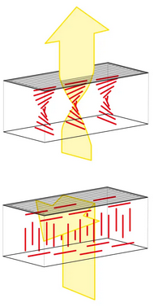
Motivation
Nematic drum
play with it yourselfMotivation
Acoustic devices
02
Modelling
Modelling
Generalised wave equation
- Conservation of mass and balance of linear momentum without body forces, with $\vec{v}$ the velocity and $\bm{\sigma}$ the Cauchy stress: \[ \partial_t \rho + \div(\rho \vec{v}) = 0, \qquad \rho \left[ \partial_t \vec{v} + (\nabla \vec{v}) \vec{v} \right] = \div \, \bm{\sigma}. \]
- Assume small time-harmonic condensation of a rest state $\rho_0$: \[ \rho = \rho_0 (1 + U) \text{ with } U(\vec{x},t) = \Re \left( u(\vec{x}) e^{-i \omega t} \right), \quad \vert u \vert = \mathcal{O}(\varepsilon), \quad \Vert \vec{v} \Vert = \mathcal{O}(\varepsilon), \varepsilon \ll 1. \]
- Dropping $\mathcal{O}(\varepsilon^2)$ terms and eliminating $\vec{v}$ by differentiating the continuity equation in time:
with $\bm{\Sigma}$ the amplitude of the linearised stress, $\bm{\sigma} = \Re \left( \bm{\Sigma} e^{-i \omega t} \right)$.
the same wave equation for every fluid; what changes is the constitutive law for $\bm{\sigma}$.
Modelling
Which elastic response?
- the Cauchy stress $\bm{\sigma}$ encodes the elastic response of the fluid to a deformation
The isotropic phase of a compressible fluid:
\[ \bm{\sigma}^{(I)} = - p \, \Idm, \qquad p = \rho c_0^2 . \]the Helmholtz equation
\[ - \Delta u - k^2 u = 0, \qquad k = \omega / c_0 . \]Virga proposed a hyperelastic stress, derived from the free energy $W(\rho, \nabla \rho, \vec{n}) = c_0^2 \rho + \tfrac{1}{2} \alpha \Vert \nabla \rho \Vert^2 + \tfrac{1}{2} \beta (\nabla \rho \cdot \vec{n})^2$ (for $\bm{n}$ fixed):
\[ \bm{\sigma}^{(V)} = - p \, \Idm - \alpha \rho \, (\nabla \rho \otimes \nabla \rho) - \beta \rho \, (\nabla \rho \cdot \vec{n}) \, \nabla \rho \otimes \vec{n}, \] \[ p = \rho c_0^2 - \rho \, \div \left( \rho \left( \alpha \nabla \rho + \beta (\nabla \rho \cdot \vec{n}) \vec{n} \right) \right) . \]$\beta = 0$: the Korteweg stress of capillary fluids, depends on the density gradient.
Small perturbation and linearisation:
\[ \bm{\sigma} \approx - p' \, \Idm, \qquad p' = \rho_0 c_0^2 s - \rho_0^3 \left( \alpha \Delta s + \beta \, \nHn{s} \right) . \]the nematic Helmholtz–Korteweg equation (after rescaling):
\[ \alpha \Delta^2 u + \beta \, \nabla \cdot \nabla \left( \nHn{u} \right) - \Delta u - k^2 u = 0 . \]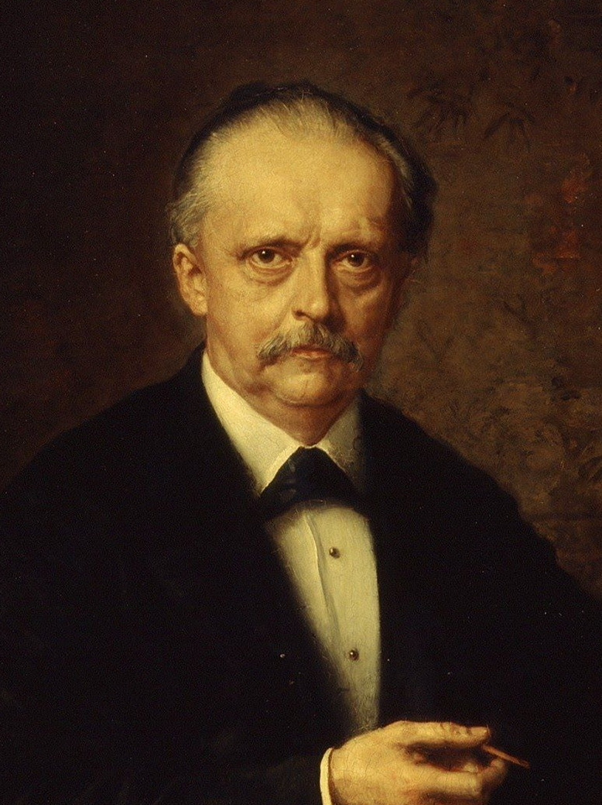
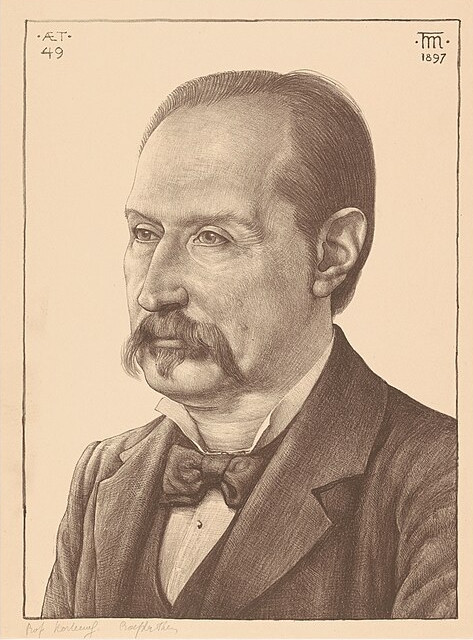
Modelling
Boundary conditions
Linearised excess pressure from before (after rescaling):
\[ p' \coloneqq u - \left( \alpha \Delta u + \beta \, \nHn{u} \right) \]Model choice: an ideal gas surrounds the domain, \[ p' \overset{!}{=} p \approx u \; \Rightarrow \; \alpha \Delta u + \beta \, \nHn{u} = 0 \]
with $\theta$ the impedance of the boundary
Modelling
The nematic Helmholtz–Korteweg equation
Find $u : \Omega \subset \mathbb{R}^d \to \mathbb{C}$, $d = 2,3$, such that
with $\alpha > 0$, $\beta > - \alpha$, and $\vec{n} \in \mathbb{R}^d$ constant, $\vert \vec{n} \vert = 1$.
or compactly, $\mathcal{L} u \coloneqq \Delta \left( \Am : \hessian u \right) - \Delta u - k^2 u = f$ with $\Am = \alpha \Idm + \beta \, \vec{n} \otimes \vec{n}$.
Given $f \in L^2(\Omega)$, find $u \in V \coloneqq \{ v \in H^2(\Omega) : {\color{gray}{\dn}} v = 0 \text{ on } \partial \Omega \}$ such that
\[ \begin{aligned} a(u,v) &\coloneqq \alpha (\Delta u, \Delta v)_{\Omega} + \beta (\nHn{u},\Delta v)_{\Omega} + (\nabla u, \nabla v)_{\Omega} - k^2(u,v)_{\Omega} \mathbin{\color{gray}{-}} {\color{gray}{i \theta (u,v)_{\Gamma_R}}} \\ &\ = (f,v)_{\Omega} \qquad \text{ for all } v \in V. \end{aligned} \]03
Well-posedness
Well-posedness
Tools
Let $V,W$ be Hilbert with $V \hookrightarrow W$ compact. If there exist constants $C_V,C_W$ such that
\[ \Re a(u,u) \ge C_V \Vert u \Vert^2_{V} - C_{W} \Vert u \Vert^2_{W} \qquad \forall u \in V, \]then the associated operator is Fredholm with index zero, i.e. well-posedness is equivalent to uniqueness of solutions.
- index zero: $\dim \ker A = \dim (V / \text{range } A)$
- useful for proving stability at the discrete level as well
If $\Omega$ is convex, or $d = 2$ and $\Omega$ is polygonal, then
\[ \Vert \hessian u \Vert_{\Omega} \le \Vert \Delta u \Vert_{\Omega} \qquad \forall u \in \{ v \in H^2(\Omega) : {\color{gray}{\dn}} v = 0 \text{ on } \partial \Omega \}. \]Well-posedness
Perturbation argument
The problem is well-posed for $\beta = 0$.
- Gårding + uniqueness (similar to Helmholtz) \[ \Re a(u,u) = \alpha \Vert \Delta u \Vert^2_{\Omega} + \Vert \nabla u \Vert_{\Omega} - k^2 \Vert u \Vert^2_{\Omega} \ge \min\{\alpha,1\} \Vert u \Vert^2_{V} - (k^2 + 1)\Vert u \Vert^2_{\Omega}. \]
- or T-coercivity: flip sign in front of 'problematic' eigenfunctions of $\alpha \Delta^2 - \Delta$
If $\vert \beta \vert < C_{\beta = 0}$, then the weak formulation is well-posed.
Well-posedness
Is this optimal?
- $C_{\beta = 0}$ depends on the stability constant of the isotropic problem
- Blow-up around resonant wave-numbers forces $\beta \to 0$
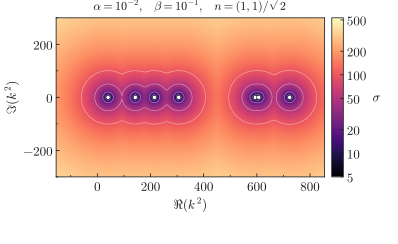
Well-posedness
Improvements
Well-posedness
The Cordes condition
With $\Am \coloneqq \alpha \Idm + \beta\, \vec{n} \otimes \vec{n} \in \mathbb{R}^{d \times d}$, we rewrite (similar to non-divergence form PDEs Smears, Süli (2013))
\[ (\alpha \Delta u + \beta \nHn{u},\Delta v)_{\Omega} = (\Am : \hessian u, \Delta v)_{L^2}, \qquad \Am : \mathbb{B} = \tr(\Am^\top \mathbb{B}) \]Pointwise estimate: for any $\gamma > 0$
If $\vert \gamma \Am - \Idm \vert_{F} < 1$, $\gamma \coloneqq \tr(\Am) / \vert \Am \vert^2_{F}$, then there exist constants $C_V,C_{L^2}$ such that
\[ \Re a(u,u) \ge C_V \Vert u \Vert^2_{V} - C_{L^2} \Vert u \Vert^2_{\Omega}, \qquad \forall u \in V. \]Use the assumption $\vert \gamma \Am - \Idm \vert_{F} < 1$ by estimating
\[ \begin{aligned} \left\vert (\gamma \Am : \hessian u - \Delta u, \Delta u)_{\Omega} \right\vert &\le \vert \gamma \Am - \Idm \vert_{F} \Vert \hessian u \Vert_{\Omega} \Vert \Delta u \Vert_{\Omega} \le \vert \gamma \Am - \Idm \vert_{F} \Vert \Delta u \Vert^2_{\Omega} \end{aligned} \]and
\[ \Re (\Am : \hessian u, \Delta u) = \gamma^{-1} \Vert \Delta u \Vert^2_{\Omega} + \gamma^{-1} \Re (\gamma \Am : \hessian u - \Delta u, \Delta u)_{\Omega} \ge \gamma^{-1} \left( 1 - \vert \gamma \Am - \Idm \vert_{F} \right) \Vert \Delta u \Vert^2_{\Omega}. \]Well-posedness
Smallness assumption
The Cordes condition $\vert \gamma \Am - \Idm \vert_{F} < 1$ is satisfied if
- $d = 2$: $\beta \in (-\alpha,\infty)$
- $d = 3$: $\beta \in (-\alpha, 3\alpha)$
- Alternative norm on $V$: $\quad C_1 \Vert u \Vert_{H^2} \le \Vert \Am:\hessian u \Vert_{L^2} + \Vert u \Vert_{H^1} \le C_2 \Vert u \Vert_{H^2}$
- $S \coloneqq \Am^{1/2}$ is an affine mapping, transformation rule applicable
- Estimate $(\Am:\hessian u,\Delta u) \ge \frac{1}{\tilde{\gamma}} (1 - \vert \tilde{\gamma} \Am^{-1} - \Idm \vert_{F}) \Vert \Am : \hessian u \Vert_{L^2}^2$
- Smallness condition on $\Am^{-1}$, satisfied if $\beta > - 3\alpha/4$ and $\alpha + \beta > 0$ (in $d = 3$)
Let $\Omega$ be bounded convex or $\Omega \subset \mathbb{R}^2$ polygonal and let $k^2 \not \in \mathcal{K}_{\text{res}}$. Then, there exists a unique weak solution of the nematic Helmholtz–Korteweg equation (sound-soft case).
04
Discretisation
Discretisation
Two routes to a discretisation
Farrell, vB, Zerbinati, Analysis and numerical analysis of the nematic Helmholtz–Korteweg equation, arXiv, 2025.
vB, A hybrid $C^0$-interior penalty method for the nematic Helmholtz–Korteweg equation, arXiv, 2026.
Discretisation
$H^2$-conforming approximation
- Discrete space with polynomial degree $p \ge 3$
\[ X_h := \{ v_h \in H^2(\Omega) : v_h|_K \in P_p(K), \forall K \in \mathcal{T}_h \} \subset H^2(\Omega) \]
- Argyris needs $p = 5$ in 2D and $p = 9$ in 3D
- HCT on a split needs $p = 3$ in 2D and $p = 5$ in 3D
- Discrete problem: find $u_h \in X_h$ s.t. $a_h(u_h,v_h) = (f,v_h)_{\Omega}$, \[ a_h(u_h,v_h) \coloneqq a(u_h,v_h) + \mathcal{N}_h(u_h,v_h) + \eta \mathcal{S}_h(u_h,v_h). \]
- Nitsche terms, e.g. \[ \alpha (\dn \Delta u_h,v_h)_{\partial \Omega} + \alpha (u_h, \dn \Delta v_h)_{\partial \Omega} \]
- Stabilisation term \[ \mathcal{S}_h(u_h,v_h) \coloneqq h^{-3} (u_h,v_h)_{\partial \Omega}\]
Farrell, vB, Zerbinati, Analysis and numerical analysis of the nematic Helmholtz–Korteweg equation, arXiv, 2025.
Discretisation
Stability of the conforming discretisation
- Estimate Nitsche terms with inverse trace estimates: \[ \Vert \dn \Delta u_h \Vert_{\partial \Omega} \le C h^{-3/2}\Vert \Delta u_h \Vert_{\Omega }, \qquad \Vert \dn (\nHn{u_h}) \Vert_{\partial \Omega} \le C h^{-3/2} \vert u_h \vert_{H^2(\Omega)} \]
Let $\eta > 0$ be sufficiently large. Then, there exist constants $C_1,C_2$ such that
\[ \Re a_h(u_h,u_h) \ge C_1 \Vert u_h \Vert_{H^2(\Omega)}^2 - C_2 \Vert u_h \Vert_{L^2(\Omega)}^2. \]- stability then follows from the abstract arguments presented later
Farrell, vB, Zerbinati, Analysis and numerical analysis of the nematic Helmholtz–Korteweg equation, arXiv, 2025.
Discretisation
$C^0$-hybrid interior penalty
- $V_h \coloneqq \left( \mathbb{P}^p(\Th) \cap H^1_{\Gamma_D}(\Omega) \right) \times \mathbb{P}^{p-1}(\Fh)$
- unknowns are tuples \[ \uh \coloneqq (\uvol, \ufac), \qquad \uvol \approx u, \ \ufac \approx \dn u \]
- HDG-jump operator: \[ \hdgjump{\dn \uvol} \coloneqq \dn \uvol - \ufac \]
- static condensation eliminates the higher-order interior bubbles
far fewer
dofsat higher $p$
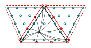
$(p+1)(p+2)/2$ interior dofs
$p$ facet dofs per facet
| $p$ | $C^0$-IP | $C^0$-HIP |
|---|---|---|
| 3 | 346 507 | 327 195 |
| 5 | 1 990 431 | 1 104 475 |
| 7 | 6 648 251 | 2 338 651 |
| 9 | 16 740 991 | 4 029 723 |
| 11 | 35 406 603 | 6 177 691 |
nonzero matrix entries,
mesh with $1896$ elements
- discrete bilinear form, stabilisation parameter $\stab > 0$: \[ \begin{aligned} a_h(\uh,\vh) &\coloneqq (\Am : \hessian \uvol, \Delta \vh)_{\Th} + (\Am:\hessian \uvol, \hdgjump{\dn \uvol})_{\partial \Th} + \stab \left( h^{-1}\hdgjump{\dn \uvol},\hdgjump{\dn \vvol} \right)_{\partial \Th} \\ &\qquad + (\nabla \uvol,\nabla \vvol)_{\Omega} - k^2 (\uvol,\vvol)_{\Omega} \mathbin{\color{gray}{-}} {\color{gray}{i \theta (\uvol,\vvol)_{\Fh^{R}}}} \end{aligned} \]
Dong, Ern, $C^0$-hybrid high-order methods for biharmonic problems, IMAJNA, 2023.
Discretisation
Abstract tools
- non-conforming: $V_h \not\subset V$ $\Rightarrow$ discrete approximation scheme (DAS) Vainikko (1981)
- $V_h \not\subset V$, projection $\pi_h : V \to V_h$ s.t. $\lim_{h \to 0} \Vert \pi_h u \Vert_{V_h} = \Vert u \Vert_{V}$ for all $u \in V$ convergence $u_h \overset{\pi_h}{\to} u$ and weak convergence $u_h \overset{\pi_h}{\rightharpoonup} u$
- $a_h(\cdot,\cdot)$ asymptotically consistent: $a_h(\pi_h u, v_h) \to a(u,v)$ whenever $v_h \overset{\pi_h}{\rightharpoonup} v$
- $\exists$ maps $\iota_h : V_h \to W$ uniformly bounded mirroring $V \hookrightarrow W$ compact $\exists J \in \mathcal{L}(V,W)$ s.t. $\forall$ bounded $\seqh{v}$ with $v_h \overset{\pi_h}{\rightharpoonup} v$, $v \in V$, we have that $\iota_h v_h \to Jv$ strongly in $W$.
If $a_h(\cdot,\cdot)$ satisfies the discrete Gårding inequality
\[ \Re a_h(u_h,u_h) \ge \widetilde{C}_V \Vert u_h \Vert_{V_h}^2 - \widetilde{C}_W \Vert \iota_h u_h \Vert_{W}^2 \qquad \forall u_h \in V_h, \]then $a_h(\cdot,\cdot)$ is asymptotically stable, i.e., inf-sup stable with $h$-independent constant for $h \le h_0$.
Discretisation
Discrete elliptic regularity
Let $h \le 1$. For any $\uh \in V_h$, we have that
\[ \Vert \hessian \uvol \Vert_{\Th} \le \Vert \Delta_h \uh \Vert_{\Th} + C_E \vert \uh \vert_{\mathcal{S}_h}, \]with constant $C_E > 0$ independent of $h$.
If $\stab > 0$ is sufficiently large, then there exist $h$-independent constants $\widetilde{C}_V, \widetilde{C}_{L^2} > 0$ such that
\[ \Re a_h(\uh,\uh) \ge \widetilde{C}_V \Vert \uh \Vert^2_{V_h} - \widetilde{C}_{L^2} \Vert \uvol \Vert^2_{\Omega} \qquad \forall \uh \in V_h. \]Discretisation
Stability & convergence
If $\stab > 0$ is sufficiently large, then $\exists\, h_0 > 0$ such that for all $h \le h_0$ the discrete problem has a unique solution $\uh \in V_h$. Moreover, if $u \in V$ solves the continuous problem,
\[ \lim_{h \to 0} \Vert u - \uh \Vert_{V_h} = 0. \]If additionally $u \in V \cap H^{2+s}(\Omega)$, $s > 1$, then
\[ \Vert u - \uh \Vert_{V_h} \le C \, h^{\min\{p-1,s\}} \Vert u \Vert_{H^{2+s}(\Omega)}. \]05
Numerical experiments
Numerical experiments
Convergence study
- unit disk $\Omega$, sound-soft $\Gamma_D = \partial \Omega$
- exact solution: \[ u_{\text{ex}}(\vec{x}) = e^{i (\vec{k} \cdot \vec{x})} \] with $\vec{k}$ from the dispersion relation, homogenised to zero data
- $\vec{n} = (1,0)^\top$, $k = 30$, $\alpha = 10^{-2}$, $\stab = 50 p^2$
- error in the broken $\Vert \cdot \Vert_{V}$-norm, refined meshes $h \approx 0.2 \cdot 2^{-L}$
- observe the predicted rate $\mathcal{O}(h^{p-1})$ for $p \in \{2,3,4,5\}$
Numerical experiments
Scattering
Numerical experiments
Tunable total internal reflection
Numerical experiments
Three-dimensional example
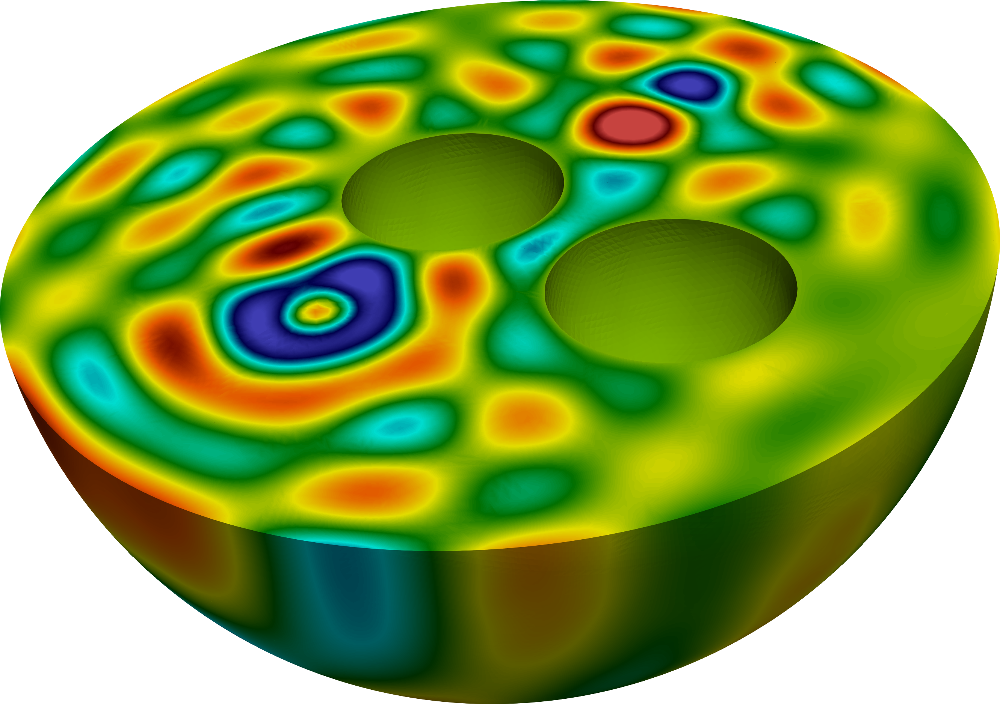
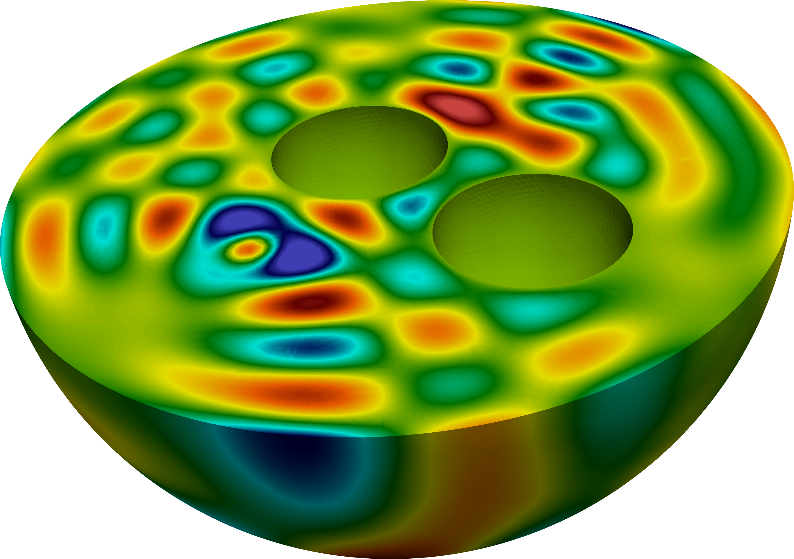
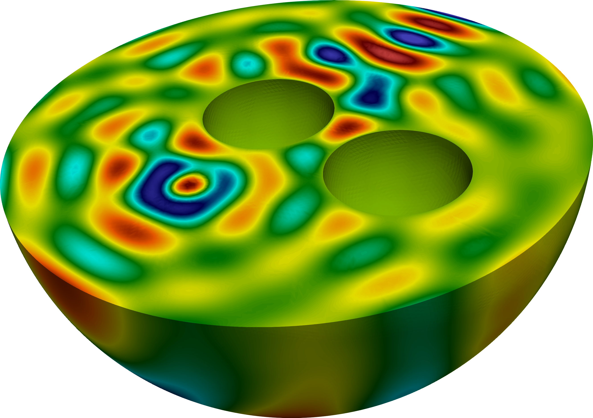
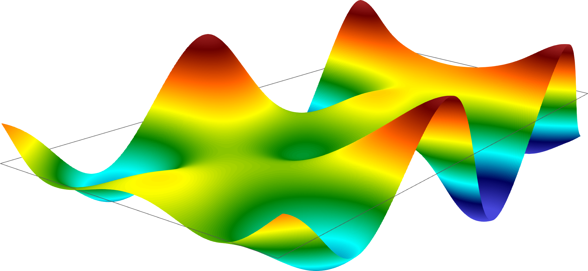
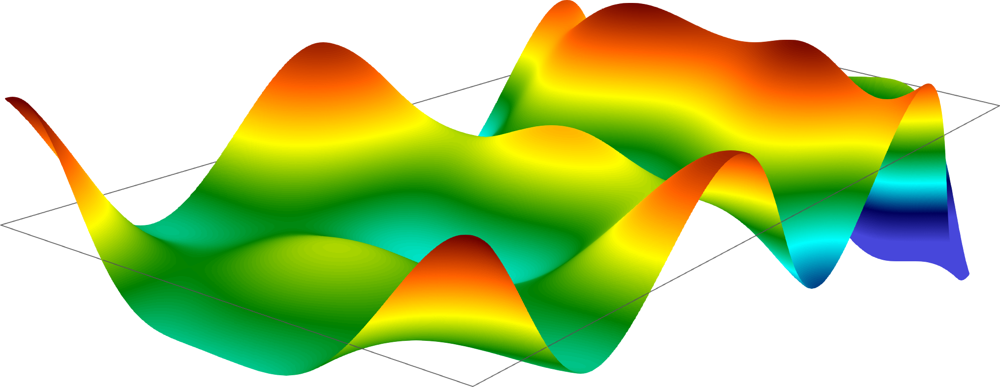
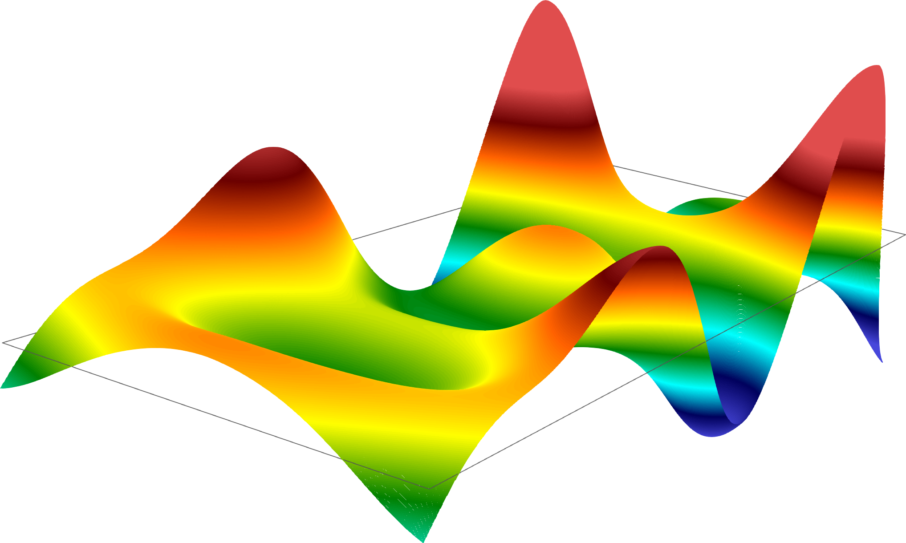
Numerical experiments
Scattering by submarine
Numerical experiments
Scattering by submarine
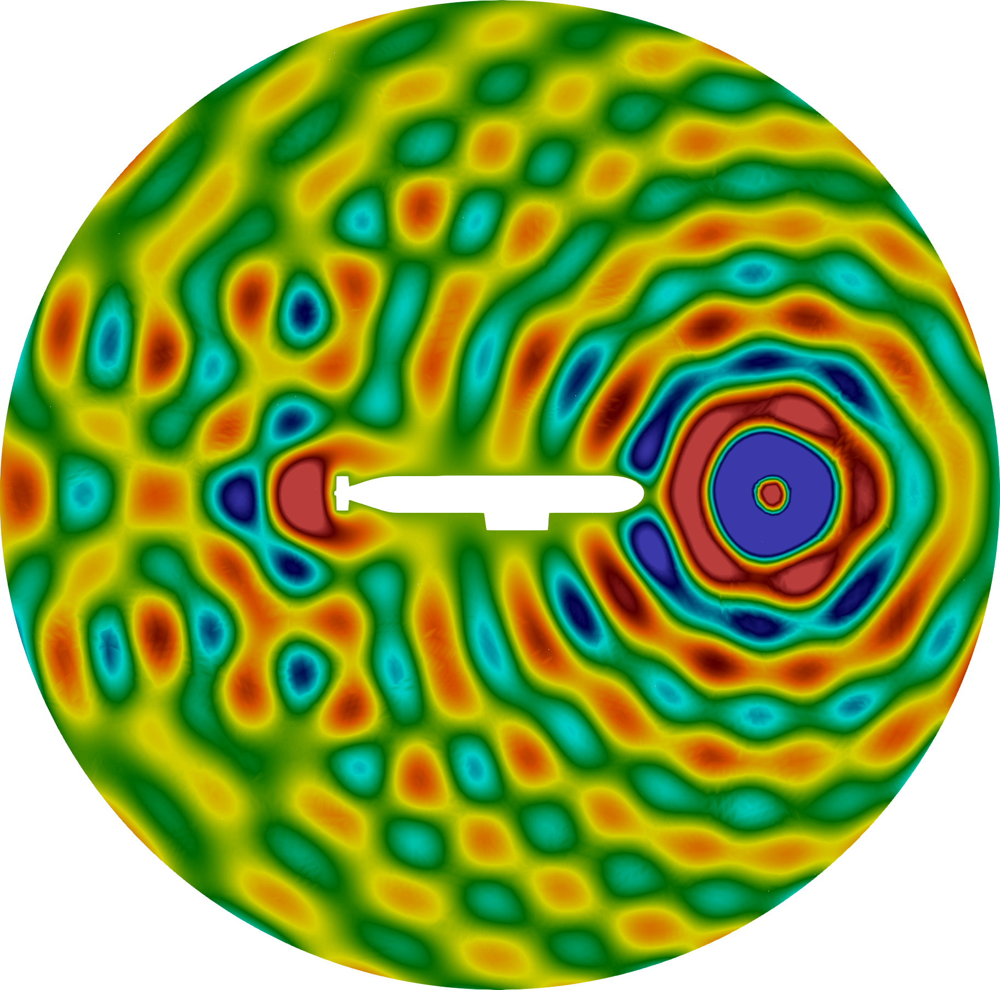
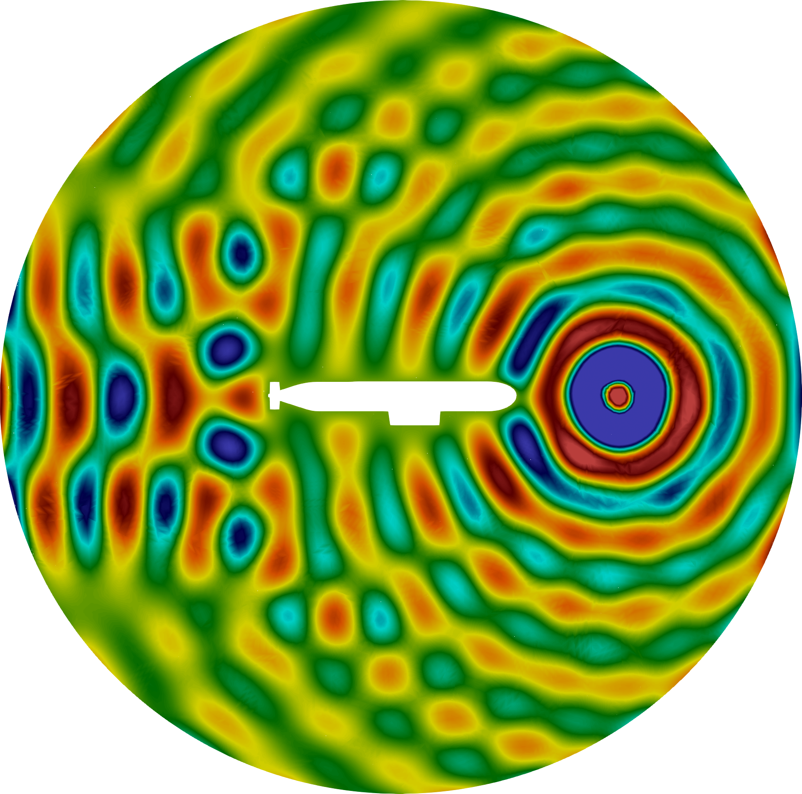
Conclusion
Summary & Outlook
- the nematic Helmholtz–Korteweg equation as a model of acoustic wave propagation in nematic liquid crystals
- well-posedness of the nematic Helmholtz–Korteweg equation explicit smallness condition on $\beta$, (mostly) independent of the isotropic stability constant
- two discretisations:
- $H^2$-conforming
- $C^0$-hybrid interior penalty
- numerical experiments, including the first 3D simulations of the nematic anisotropy
- analysis of the transmission problem conditions across an interface between two media
- non-constant director $\vec{n}$ assumed $\vec{n}$ constant, tackle variable $\bm{n}$ via Energy minimization
$C^0$-hybrid IP for the nematic Helmholtz–Korteweg equation
Thank you!
Tim van Beeck
University of Göttingen,
Institute for Numerical and Applied Mathematics
Thanks to Umberto Zerbinati for the nematic drum,
and to Philip Lederer for the html-talk template.
P. E. Farrell, U. Zerbinati, Time-harmonic waves in Korteweg and nematic-Korteweg fluids, Phys. Rev. E 111, 035413, 2025.
P. E. Farrell, T. van Beeck, U. Zerbinati, Analysis and numerical analysis of the nematic Helmholtz–Korteweg equation, arXiv:2503.10771, 2025.
T. van Beeck, A hybrid $C^0$-interior penalty method for the nematic Helmholtz–Korteweg equation, arXiv, 2026.